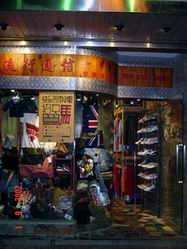
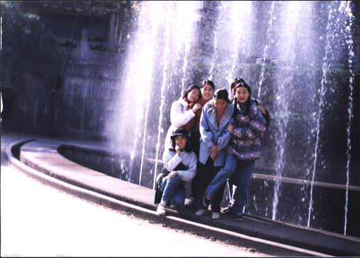

上午外出一趟，虽然天气热可还能够忍受。
现在是周六下午14：53分，我老妈在隔壁的房间跟着电视节目学恰恰舞，我在自己的房间上网。窗外的热气往屋内扑，倒不觉得热却能感到温暖。我的宝贝狗狗趴在我的脚边睡觉，睡之前他狂叫了好一阵子，也不知道他叫什么，吵得人心烦。小狗狗原来也会闹觉啊？！这时候我很满足，平平静静的也挺幸福！>
本来写好了长长的“续”，没有保存就拨号上网准备发帖子了，最终前功尽弃。写好的文字不知道怎么我的手指碰了键盘，顷刻间什么都没有了，就这样在凌晨2：22分，我在自己的小屋里凄惨地叫了一声。这件事情说明我喜欢冒险，喜欢自欺欺人。明明可以保存的非要这么着走钢丝，为哪般呢？
睡醒之后时间将近下午6点，当时火气很大，烦躁不安，索性骑车上街游荡，经过一些小店买了一双休闲的凉鞋和一套健身的运动衣裤。女人心情不好的时候，可能是通过购物来发泄的吧？

6月2日凌晨3：08分听见外面的马路上一闪而过的音乐声，可能是乘着人少出来的飚车一族。想起去年一个夏天的夜晚，大象打电话给我，问我是否出去感受一下他的“小毛驴”，早先他一直许诺要代我坐他老妈的小毛驴的。那时侯我一直很烦，索性向我老妈请假外出。大象是理工商学院毕业的，有一年的时光是和我同在外校的校园里上课、生活。我认识他之后才知道我妈和他爸在同一个系统里工作，并且认识。
这是我2001年7月3日留言的一段：
——体验过在情绪低落的夜晚，从闷热的城市骑摩托车冲向郊外的感觉吗？过了中山门的时候就可感到一股股的凉意和明显的温差，偶尔可以遇见三两个人，或走或骑着车，在我们的车灯中一晃而过。前面有一座桥，长长的桥梁在幽蓝的夜色中耀眼的白，于是我们熄灭车灯加大油门，准备行过下一座桥。周围葱翠茂盛的树木沉没在漆黑、寂寥的氛围中，仿佛这氛围包裹着我，仿佛世界只剩下我一人，那真正意义上的无人之境似乎就在眼前！
那时侯我是外校学生会的文艺部长，经过大会讨论选票上任了。为了96年国庆节的文艺晚会我招集各个班的学生干部开会。我在讲台上说话的时候，大象穿着花衬衣和沙滩裤，大一的他经过军训皮肤晒得黝黑，好象刚从海滨度假回来似的。他背对着我坐在前排的课桌上，和后面的同学喜笑颜开的聊天，声音特响亮。因为他无忧无虑的模样，我一点没有厌烦他的感觉。后来我们成了非常要好的朋友，接着我们各自居住的宿舍也成了友谊宿舍。因此，为我在外校两年短暂的求学生活增加了一些亮丽的色彩。那段时间我们两个宿舍的人经常一起吃饭，圣诞节时一起去教堂然后看通宵电影，第二天早上6点多钟再从市里赶回学校参加晨跑，还记得路上我们买的早饭是油条，边走边吃，挺香。
大象他们宿舍有个帅哥外号叫“罗耳”，这外号不知道出于哪个典故。有个大专班的女生追求他好长一段时间，尽管那个女孩子有自己的男朋友，并且还在同一个校园。她每天晨跑都会等在罗耳的宿舍楼下，还经常给罗耳买好吃的东西，以至于他们宿舍的男生都极力反对罗耳拒绝那个女孩。
后来大象毕业和我又在同一个大院同一个系统里工作，见面的机会不算多但也不少。谈了两年多的女友于去年分手，分手那会儿他也是经过了很长时间的思想斗争，最后还是分了。我们见面仍然还会那么随意自然的聊天调侃，可是感觉上他或是我已不再无忧无虑！

外校和我住一个宿舍的女生
No Responses to “2002年6月1日”
Leave A Reply
存档只读，评论已关闭。